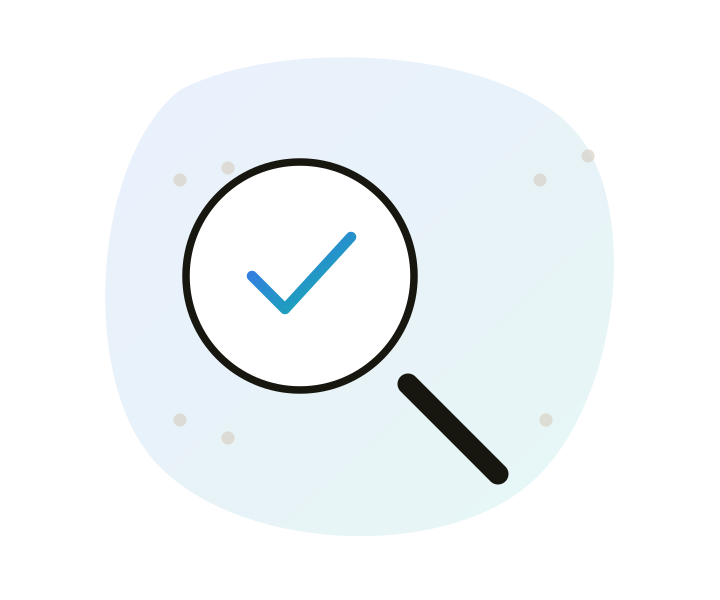

Accessibility testing
Practical testing methods, what automated tools actually catch, and what still needs a human.

Manual testing basics
Before reaching for any tool, most accessibility problems reveal themselves through a few basic manual checks anyone on a team can run in a few minutes.
Keyboard
Unplug the mouse. Tab through the whole page. Everything interactive should be reachable, in a sensible order, with a visible focus indicator at every stop.
Zoom
Zoom the browser to 200%. Content should reflow, not just scale off-screen or overlap.
Text resizing
Increase text size independent of zoom. Layout shouldn't break or truncate text.
Colour contrast
Check text against its background with a contrast checker. AA requires 4.5:1 for normal text, 3:1 for large text.
None of these need special tools beyond what's built into a browser and OS. They're also the fastest way to catch the most common issues before anything reaches a screen reader test.
Screen reader testing
Every platform has its own screen reader, and testing with the real one people will actually use matters more than testing with whichever is most convenient.
Built into the OS
- VoiceOver: macOS and iOS, Apple's native screen reader.
- TalkBack: Android's native screen reader.
- Narrator: built into Windows.
Third-party, mostly Windows
- NVDA: free, open source, widely used for testing.
- JAWS: paid, still common in enterprise and government contexts.
A reasonable minimum bar: test with VoiceOver on whichever Apple device is relevant, and NVDA on Windows for web. If the product is a native mobile app, TalkBack testing on Android is not optional, the two platforms genuinely behave differently.
Automated vs manual
Automated tools, including this one, are a fast first pass, not a full audit. Knowing the boundary matters more than picking a tool. If you need a full audit or advice, get in touch.
What automated tools catch well
- Missing alt text and labels
- Colour contrast failures
- Missing form labels
- Invalid or missing ARIA
- Heading structure issues
What still needs a human
- Whether alt text is actually meaningful
- Whether a workflow makes sense using only a screen reader
- Whether reading order matches visual order in complex layouts
- Whether error messages are genuinely helpful
- Real usability for people with disabilities
The honest framing: automated coverage is commonly estimated at somewhere around a third of WCAG success criteria. That's still valuable as a fast, cheap first pass, catching obvious issues before anything reaches manual or user testing, but it was never meant to be the last check. If you need a full audit or advice on what to fix, get in touch.